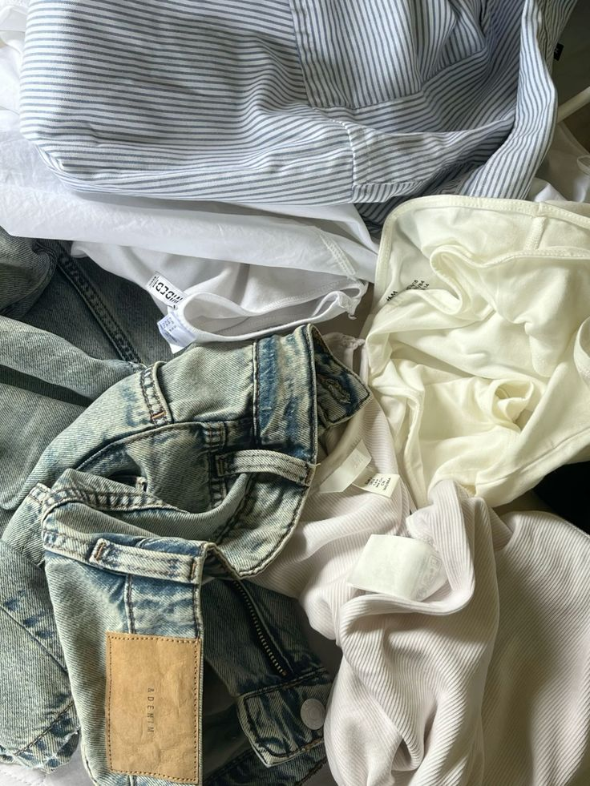
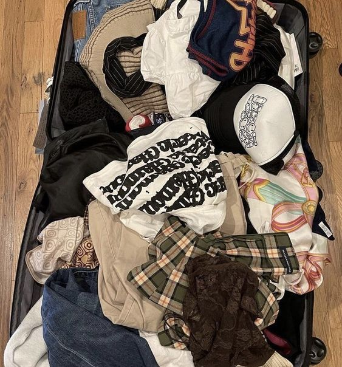
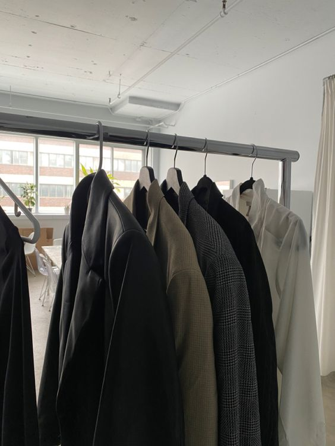
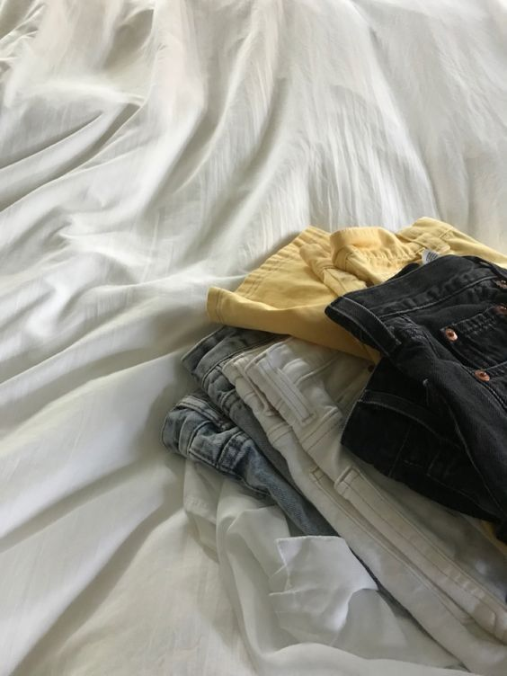

BYO-Middag - Bring Your Own
En BYO-middag (Bring Your Own) er en fantastisk måde at samle venner, familie eller kolleger på en uformel og sjov måde, hvor hver deltager bidrager til aftensmaden. Dette unikke koncept giver alle mulighed for at dele deres yndlingsretter og drikkevarer, samtidig med at det skaber en hyggelig og afslappet atmosfære. En af de mest attraktive aspekter ved en BYO-middag er, hvordan det kan hjælpe med at spare penge.
Sådan fungere det:
  x 
Bytte-aften: Del, Byt og Genbrug
Har du nogle ting derhjemme, som du ikke længere bruger? Ønsker du at finde nye skatte uden at bruge penge? Så er en bytte-aften lige noget for dig! Dette arrangement giver dig mulighed for at dele dine overskydende genstande med andre og samtidig finde nye favoritter blandt dine venners ting.
Sådan fungere det:
Del området op i sektioner baseret på kategori (f.eks. bøger, tøj, accessories), så det er nemt at finde rundt.
Overvej at give deltagerne "bytte-billetter", som de kan bruge til at bytte tingene.
Del området op i sektioner baseret på kategori (f.eks. bøger, tøj, accessories), så det er nemt at finde rundt.
Overvej at give deltagerne "bytte-billetter", som de kan bruge til at bytte tingene.
Når alle er samlet, præsenterer deltagerne deres genstande. Derefter kan I begynde bytteprocessen, hvor alle får mulighed for at bytte med hinanden.
Skab en afslappet atmosfære med snacks, drikkevarer og musik, så det bliver en festlig oplevelse.